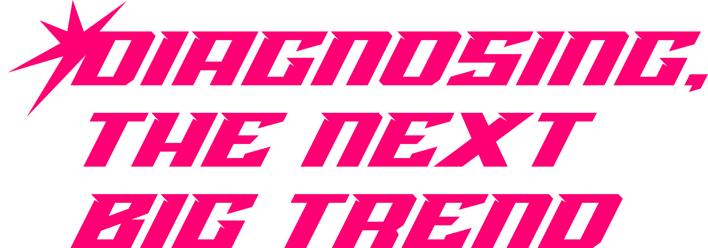
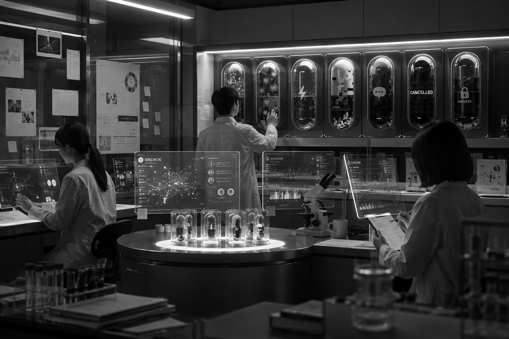

디지털 대전환의 시대를 지나, 우리는 매일 아침 눈을 뜨자마자 알고리즘의 바다로 다이브합니다. 타임라인은 끊임없이 새로운 자극을 주입하고, 우리의 뇌는 웃음의 호흡에 맞춰 재조립되었습니다.
과거의 의학은 신체의 결손을 치료했으나, 신병연구소(新病研究所)는 현대인이 미디어 환경 속에서 자발적으로 감염되는 '정신적·문화적 변이 현상'을 주목합니다. 명확한 병명은 없으나 모두가 알고 있는 모순적인 행동 양식, 예를 들면 타인의 시선을 극도로 의식하면서도 무심한 척 코스프레를 하거나, 인터넷 온라인으로 소통이 가능한 기묘한 상태를 우리는 '신병(新病)'이라 명명합니다. 본 연구소는 이 가상의 바이러스들이 어떻게 대중의 뇌를 잠식하고 있는지 추적합니다.

현대인은 너무 많은 정보를 실시간으로 처리하다가 뇌가 과열되어 멈추는 '디지털 방열 상태'에 빠져 있습니다. 우리는 이를 방치하지 않고 예술적·시각적 데이터로 박제합니다.
쓸데없어 보이는 인터넷 밈과 트렌드를 고도의 학술적 연구 대상처럼 진지하게 다룸으로써, 무의미 속에 숨겨진 시대의 진짜 욕망을 해부합니다.
나만 이상한 게 아니라는 안도감을 제공하고, 각자의 소소한 정신적 변이 증상을 투명하게 고백할 수 있는 안전한 연구 공간을 지향합니다.